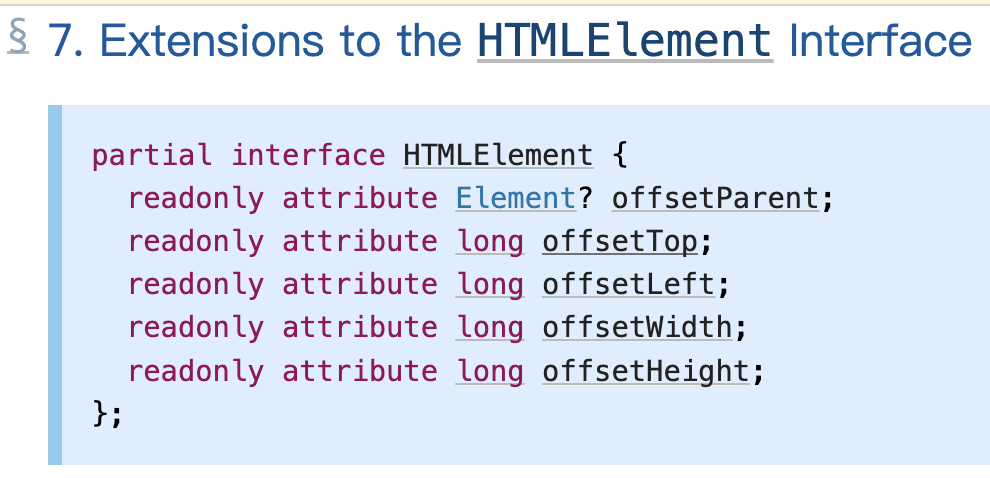

offsetTop的定义在w3c的cssom-view module中
offsetTop的编程接口定义如下：

地址：https://w3c.github.io/csswg-drafts/cssom-view/#extensions-to-the-htmlelement-interface
offsetTop指的是元素自身边框外侧和离自己最近的满足如下条件之一的祖先元素边框内侧的距离，变量类型是Long：
1、拥有定位属性
2、td、th、table,并且他们自身的position是static
在以下情况下，offsetTop返回null：
3、元素自身或者其中一个祖先元素的display属性是none
4、元素自身的定位是fixed（Firefox返回的是距body边框内侧的距离）
5、元素是html或者body
在除去以上5条的情况下，offsetTop指的是与body边框内侧的距离